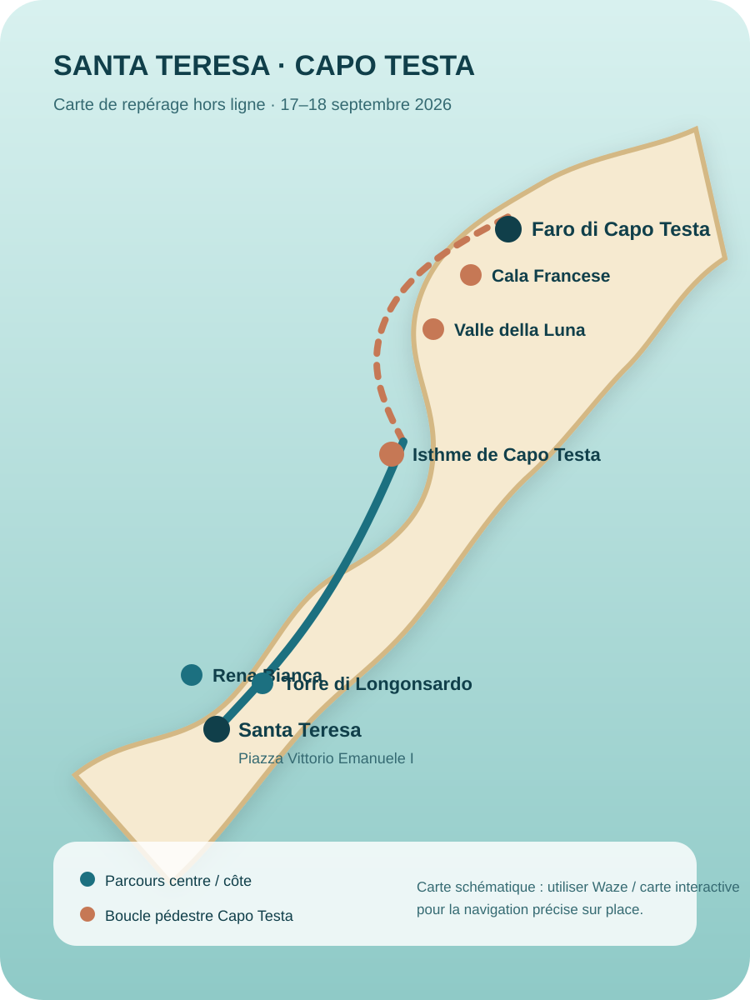

17–18 septembre 2026 · Gallura
Le territoire devient
votre interface
Réalité augmentée géolocalisée, navigation pédestre, audioguide contextuel, planning sécurisé et souvenir numérique.
Compagnon de route
Maintenant
V6 · adaptation sûre
Compagnon intelligent
Les recalages ne déplacent jamais les transports verrouillés et sont automatiquement limités avant une contrainte fixe.
Planning adaptable
Programme complet
Navigation en direct
Carte & GPS

V6 · Geo‑AR
AR Explorer
Caméra + GPS + boussole
Levez le téléphone et regardez autour de vous
Les lieux apparaissent directement dans le paysage avec leur distance et leur direction. Visez un repère pour obtenir son histoire, lancer l’audioguide ou partir à pied.
Guide culturel géolocalisé
Audioguide & repérage
Autour de moi
Tous les repères
Carnet visuel
À découvrir
Lecture culturelle
Repères historiques
Votre voyage se construit tout seul
Souvenir numérique
Stockage local actif
✓ Lieux visités
📷 Ajouter un souvenir
Les photos classiques restent dans le carnet ; le mode AR peut aussi créer une photo annotée prête à partager.
Ambiance
Playlist Santa Teresa
Pratique
Voyage
Retour ferry protégé
Le circuit est verrouillé à 12:00 pour préserver une marge avant le retour au port.
Horaire billet à confirmerHôtel au centre
Le guide peut recevoir le nom, l’adresse et le lien Waze exacts.
À compléterNavette Capo Testa
Départ prévu Piazza Bruno Modesto 15:10 → Faro 15:40 ; retour 19:00.
Sac de journée
Diagnostic terrain S22
Ouvre un diagnostic autonome : GPS, caméra, photo, orientation, tactile, stockage et PWA.
Ouvrir le diagnostic S22